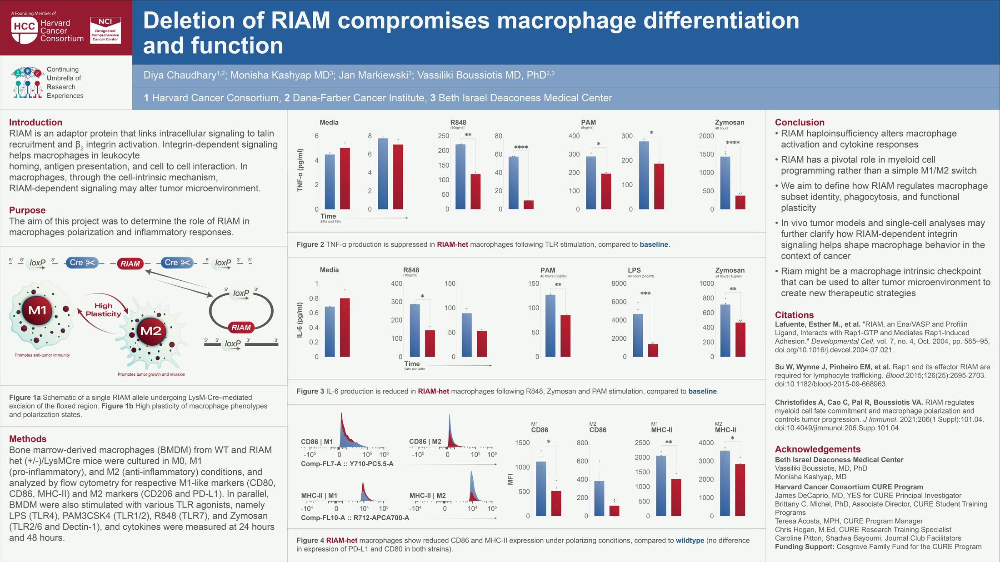

Deletion of RIAM compromises macrophage differentiation and function
poster
Diya Chaudhary, Monisha Kashyap, Jan Markiewski, Vassiliki Boussiotis
August 2026
presented by Diya Chaudhary to the 2026 Continuing Umbrella of Research Experiences (CURE) summer research program at the Dana-Farber Cancer Institute

